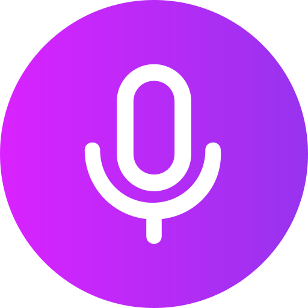
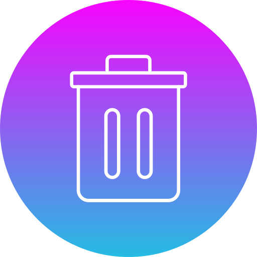

Turn messy thoughts into
actionable notes.
The #1 AI. voice note app
Turn hours of note taking into minutes. Just record a voice note,
and let the AI transcribe, clean up and structure it for you.
Available on Web, iOS and Android.
Limit: 01:00
00:00



Click the to start the demo